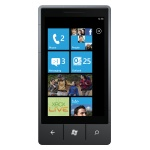

Windows Phone 7 takes a fundamentally different approach to phone software. Smart design begins with a new, holistic design system that informs every aspect of the phone, from its visually appealing layout and motion to its function and hardware integration.
- details
-

Windows Phone 7
FROM: Microsoft
RELEASED: October 2010
WEBSITE: official website
- images
- features
-
Discover Every Windows Phone 7 device will come with a dedicated hardware button for Bing, providing one-click access to search from anywhere on the phone, while a special implementation of Bing search provides intent-specific results, delivering the most relevant Web or local results, depending on the type of query. Windows Phone 7 creates an unrivaled set of integrated experiences on a phone through Windows Phone hubs. Hubs bring together related content from the Web, applications and services into a single view to simplify common tasks. Windows Phone 7 includes six hubs built on specific themes reflecting activities that matter most to people.
People & Pictures Hub These hubs delivers an engaging social experience by bringing together relevant content based on the person, including his or her live feeds from social networks and photos. It also provides a central place from which to post updates to Facebook and Windows Live in one step. The Pictures hub makes it easy to share pictures and video to a social network in one step. Windows Phone 7 also brings together a user's photos by integrating with the Web and PC, making the phone the ideal place to view a person's entire picture and video collection.
Music & Video Hub This hub creates an incredible media experience that brings the best of Zune, including content from a user's PC, online music services and even a built-in FM radio into one simple place that is all about music and video. Users can turn their media experience into a social one with Zune Social on a PC and share their media recommendations with like-minded music lovers. The playback experience is rich and easy to navigate, and immerses the listener in the content.
Games & Office Hub The Games hub delivers the first and only official Xbox LIVE experience on a phone, including Xbox LIVE games, Spotlight feed and the ability to see a gamer's avatar, Achievements and gamer profile. With more than 23 million active members around the world, Xbox LIVE unlocks a world of friends, games and entertainment on Xbox 360, and now also on Windows Phone 7. The Office hub brings the familiar experience of the world's leading productivity software to the Windows Phone. With access to Office, OneNote and SharePoint Workspace all in one place, users can easily read, edit and share documents. With the additional power of Outlook Mobile, users stay productive and up to date while on the go.

{kind=link}
{kind=link}
{kind=link}
{kind=link}
{kind=link}
{kind=link}
{kind=link}
{kind=link}